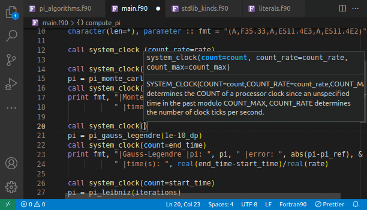

Features¶
Project-wide and Document symbol detection and Renaming
Hover support, Signature help and Auto-completion
GoTo/Peek implementation and Find/Peek references
Preprocessor support
Diagnostics
Code actions
Intrinsics modules
Completion¶


Hover¶


Symbols¶
Project-wide and single Document symbol search


Signature Help¶
Find References¶

Go To Definition of a function¶

Peek into the Definition of a function¶

Peek into all the References of a function¶
Renaming¶

Rename a variable¶
Diagnostics¶
Multiple definitions with the same variable name
Variable definition masks definition from parent scope
Missing subroutine/function arguments
Unknown user-defined type used in
TYPE/CLASSdefinition (only if visible in project)Unclosed blocks/scopes
Invalid scope nesting
Unknown modules in
USEstatementUnimplemented deferred type-bound procedures
Use of non-imported variables/objects in interface blocks
Statement placement errors (
CONTAINS,IMPLICIT,IMPORT)
Code Actions¶
Generate type-bound procedures and implementation templates for deferred procedures
Intrinsics Modules¶
ISO_FORTRAN_ENV,ISO_C_BINDINGGCC 11.2.0IEEE_EXCEPTIONS,IEEE_ARITHMETIC,IEEE_FEATURESGCC 11.2.0OpenMP
OMP_LIB,OMP_LIB_KINDSv5.0OpenACC
OPENACC,OPENACC_KINDSv3.1
All LSP Requests¶
Request |
Description |
|---|---|
|
Get workspace-wide symbols |
|
Get document symbols e.g. functions, subroutines, etc. |
|
Suggested tab-completion when typing |
|
Get signature information at a given cursor position |
|
GoTo definition/Peek definition |
|
Find all/Peek references |
|
Same as |
|
Show messages and signatures upon hover |
|
GoTo implementation/Peek implementation |
|
Rename a symbol across the workspace |
|
Document synchronisation upon opening |
|
Document synchronisation upon saving |
|
Document synchronisation upon closing |
|
Document synchronisation upon changes to the document |
|
Experimental Generate code |